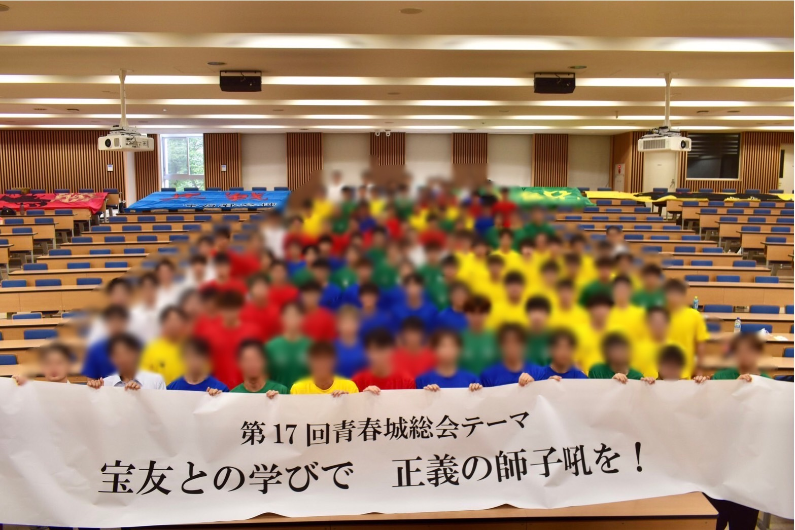

青春城総会

滝山祭の発展的解消を受け、男子寮の精神を継承していくために開催された2007年より始まった総会である。
滝山祭シーズン中は、大学の授業終了後、男子寮生が中心となって『創立者の語らい』などを通して建学の精神や滝山祭の意義などを学んできた。しかし寮生の中には、滝山祭がなくなり十年、二十年、百年と時が経つにつれて、この「師弟の精神」が希薄になっていくのではないか、との思いがあった。こうして当時の寮長会は「寮生主張大会」という集会を開き、その数年後に「７・３」という意義深い日を「男子寮の日」として制定し、「滝山祭」を継承し行く新たな会合として「青春城総会」を作った。